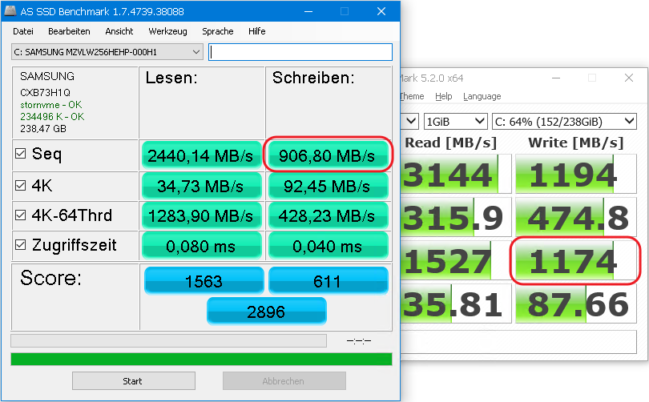

Recently I was very disappointed by the fact that copying 400GB from NVMe SSD drive to another NVMe SSD drive took almost 2 hours. I was expecting this to be done in 10-20 minutes or faster, instead I've got performance of HDD drive 10 years ago.
It appears that extreme SSD speeds measured by tools like CrystalDiskMark or AS SSD measure only so-called SLC cache on SSD drive - portion of high-performance memory, which typically is not larger than 10GB.
After digging through internet and failure to find statistics of real SSD performance and also failure to find appropriate tool to measure my own SSD drives I've decided to create my own tool.
Please welcome yet another tool to measure SSD performance - SSD SlowMark.
There are only two things it can measure currently - Sequential Read Speed and Sequential Write Speed. But unlike other tools which also can measure that "same thing" ...
One more test I may add in some future - time of disk freeze caused by deletion of huge amount of data (N*10GB). During that period disk performs TRIM operation. Some disks completely freeze for few seconds, some disks just slow down significantly.
Typical Write chart of the modern NVMe SSD drive looks like the one below (generated by SSD SlowMark, of course):


Typical test results available in internet are performed on the fresh-new and absolutely empty SSD drive - this wrong. Why? - because SSD drives typically become slower when filled and, of course, you do not buy drive to keep it empty.
So, lets perform tests with drive initially filled at 50% (or more) and after writing entire test data set there is still at least 10-30% of free space on disk.
According to my observations, in such initial conditions, size of the test data set required to both find size of effective SLC cache and run test quickly is 50GB. So let's use this size for reference.
For example:
Now ...
Advanced usage ...
In generated report you will find:

And here are some results I've got on some SSD drives
| Drive Model | Type | Size, GB | Year | Price, $$$ | Read MB/s | Write MB/s | Cache Write MB/s | Cache Size GB |
|---|---|---|---|---|---|---|---|---|
| WD Black 2018 | M.2: NVMe | 500 | 2018 | $120 | 1975 | 450 | 840 | 5.5 |
| Intel 660p | M.2: NVMe | 1000 | 2018 | $130 | 1350 | 70 | 700 | (?) 20 |
| AData SP550NS38 | 2.5: SATA | 240 | ??? | ??? | 450 | 125 | - | - |
| Goodram CX200 | 2.5: SATA | 480 | 2016 | ??? | 440 | 220 | - | - |
| Samsung MZVLW256HEHP | 2.5: SATA | 256 | 2016 | ??? | 1850 | 203 | 445 | 2.5 |
| Samsung 850 EVO | 2.5: SATA | 500 | ??? | ??? | 460 | 150 | 295 | 5.5 |
| SanDisk SDSSDHII | 2.5: SATA | 480 | 2014 | ??? | 470 | 130 | - | - |
Note - read & write charts for Intel 660p are really strange ...
If you have some useful test results ...
- fresh models of SSD drives
- older models, but still recommended for buy
... you may send your results (archived folder with report files)
to software.tools4free@gmail.com to get them published here.
Additionally please specify connection type, same model may have multiple ones.